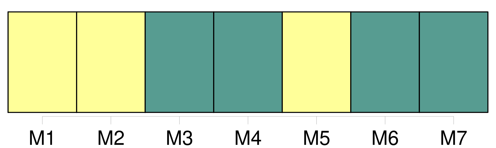
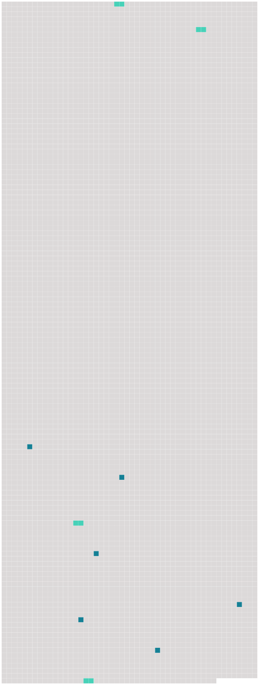

Longueur nb maillons : 10 mentions |
 |
L'acte authentique du consentement dès pères et mères ou aïeuls et aïeules, ou, à leur défaut, celui de [la famille] , contiendra les prénoms, noms, professions et domiciles du futur époux et de tous ceux qui auront concouru à l'acte, ainsi que leur degré de parenté. [11 phrases]
Le consentement des pères et mères, aïeuls et aïeules, et celui de [la famille] , dans les cas où ils sont requis ; [180 phrases]
Six mois après la disparition du père, si la mère était décédée lors de cette disparition, ou si elle vient à décéder avant que l'absence du père ait été déclarée, la surveillance des enfans sera déférée, par le conseil de [famille] , aux ascendans les plus proches, et, à leur défaut, à un tuteur provisoire, [23 phrases]
Les enfans de [famille] ayant atteint la majorité fixée par l'article 148, sont tenus, avant de contracter mariage, de demander, par un acte respectueux et formel, le conseil de leur père et de leur mère, ou celui de leurs aïeuls et aïeules, lorsque leur père et leur mère sont décédés, ou dans l'impossibilité de manifester leur volonté. [12 phrases]
Les officiers de l'état civil qui auraient procédé à la célébration des mariages contractés par des fils n'ayant pas atteint l'âge de vingt-cinq ans accomplis, ou par des filles n'ayant pas atteint l'âge de vingt-un ans accomplis, sans que le consentement des pères et mères, celui des aïeuls et aïeules, et celui de [la famille] , dans le cas où ils sont requis, soient énoncés dans l'acte de mariage, seront, à la diligence des parties intéressées et du commissaire du Gouvernement près le tribunal de première instance du lieu où le mariage aura été célébré, condamnés à l'amende portée par l'article 192, et, en outre, à un emprisonnement dont la durée ne pourra être moindre de six mois. [7 phrases]
S'il n'y a ni père ni mère, ni aïeuls ni aïeules, ou s'ils se trouvent tous dans l'impossibilité de manifester leur volonté, les fils ou filles mineurs de vingt-un ans ne peuvent contracter mariage sans le consentement du conseil de [famille] [32 phrases]
Lorsque le consentement du conseil de [famille] , requis par l'article 160, n'a pas été obtenu ; [2 phrases]
Dans les deux cas prévus par le précédent article, le tuteur ou curateur ne pourra, pendant la durée de la tutelle ou curatelle, former opposition qu'autant qu'il y aura été autorisé par un conseil de [famille] , qu'il pourra convoquer. [16 phrases]
Le mariage contracté sans le consentement des père et mère, des ascendans, ou du conseil de [famille] , dans les cas où ce consentement était nécessaire, ne peut être attaqué que par ceux dont le consentement était requis, ou par celui des deux époux qui avait besoin de ce consentement. [10 phrases]
Le père, la mère, les ascendans et [la famille] qui ont consenti au mariage contracté dans le cas de l'article précédent, ne sont point recevables à en demander la nullité. |
 |
Il est possible de télécharger la ressource sur la page Ortolang |
Si vous avez des questions ou vous voyez des erreurs, merci d'envoyer un mail à silvia.federzoni89@gmail.com |